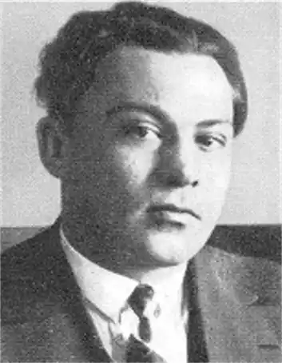

Аркадій Любченко (1899–1945) — один із найвизначніших представників "славної когорти "м’ятежних геніїв" 20-х років на чолі з Миколою Хвильовим", творчість якого після довгого й незаслуженого забуття нарешті повернуто до української літератури. Письменник невичерпної оптимістичної віри у краще майбутнє свого народу, він став чи не найпослідовнішим представником революційної романтики, або романтики вітаїзму, підхопивши й розвинувши всі найвагоміші ідеї Миколи Хвильового. І якщо в останнього до полум’яної віри в загірну комуну раз по раз примішується невтішне усвідомлення неподоланості світового міщанства, яке здатне проникнути й у святая святих, то в Аркадія Любченка мажорне звучання його найкращого твору "Вертеп" не затемнюється жодною хмаринкою сумніву, так, начебто суспільних протиріч, про які з гіркотою пише його старший товариш, вже й немає, і вже запанувала ера світлого комуністичного прийдешнього. Справді бо, Аркадій Любченко — романтик життєствердного, вітаїстичного мистецтва, якому, на жаль, не судилося розцвісти на повну силу.
Прихід письменника в українську літературу припадає на першу половину 20-х рр. ХХ ст. У 1924 р. вийшли перші його прозові твори "Гордійко", "Зяма", які були помічені критикою і відразу принесли авторові успіх. У 1926 році виходить перша прозова збірка А. Любченка "Буремна путь". О. Білецький так характеризує ці перші твори: "Цей поет юності не по-юначому суворий до своєї форми, до свого стилю й композиції: він взагалі скупий на слова й лише зрідка показує, які скарби слова встиг надбати, і починає кидати їх із щедрот".
Ранні новели й оповідання А. Любченка ("Гордійко", "Зяма", "Тихій хутір", "№ 2002", "Чужі", "Із темного передпокою") загалом є сюжетними творами з елементами експериментаторства, вони репрезентують здебільшого навколореволюційну тематику, хоча трапляються й переповідання анекдотів — данина авторському захопленню "сюжетною" прозою. Аркадій Любченко водночас бере активну участь у громадському літературному житті. З 1925 року письменник входить до лав ВАПЛІТЕ, обіймаючи посаду незмінного секретаря цієї організації. Із цього часу він стає вірним ідейним супутником Миколи Хвильового, бере участь у всіх його наступних літературних проектах — "Літературному ярмаркові" (1928), а згодом Пролітфронті (1929). Творчий доробок А. Любченка можна умовно поділити на три основні етапи. Перший із них, що відбувся у хронологічних межах Розстріляного Відродження (від першої прозової збірки 1926 року до другої — "Вона" 1929 року), є найбільш плідним і вартісним. У цей період виходять найкращі твори письменника — оповідання "Два листи", "Образа", "Гайдар (степова легенда)", новела "Via dolorosa", повість "Вертеп" (1929). Автор дає неперевершені зразки орнаментальної прози ("Гайдар", "Вертеп"): поряд із сюжетним у його доробку дедалі частіше виникає високопатетичний твір, що за ознаками своєї поетики наближається до модерністського ґатунку "поезії в прозі", в якому епічне начало поступається ліричному, суб’єктивному, лінійної оповідний наратив — асоціативному, умовному. Водночас А. Любченко продовжує новелістичну традицію української літератури. Найяскравіші новели цього періоду — "Зяма", "Via dolorosa" — демонструють авторську майстерність в оперуванні найменшими настроєво-емоційними нюансами, зоровими та слуховими враженнями. Микола Хвильовий із цього приводу пише: "Це, мабуть, єдиний у нас художник, що його можна назвати новелістом. Це вибагливий, вишуканий мініатюрист, що, очевидно, буде продовжувати Коцюбинського в його європейських імпресіоністичних новелах". Наступний етап творчості А. Любченка хронологічно збігається з найчорнішими для України роками (1930–1940). Письменник дивом не став жертвою сталінських репресій проти української інтелігенції (його двічі заарештовують, але обидва рази відпускають) та масового голодомору 1932–1933 рр., але, безумовно, зазнав страшних моральних метаморфоз. В умовах нечуваного терору й тиску на творчу особистість (на початку тридцятих років А. Любченко виступає з "покаянними листами", самокритикою), страждань від втрати близьких, друзів (самогубство Миколи Хвильового, арешти М. Куліша, Леся Курбаса, Остапа Вишні, Майка Йогансена, О. Слісаренка, Ґео Шкурупія та багатьох інших) письменник входить у тривалу творчу кризу. Крім того, дорогу до вільної літературної творчості перекривали новоутворені канони та приписи соцреалізму, за чітким дотриманням яких наглядала невсипуща, компетентна цензура. "У цей час, — зазначає одна з біографів автора "Вертепу" Л. Пізнюк, — письменник починає цікавитися шахтарським життям. Він пише низку оповідань, починає працю над романом "Горлівка", але не закінчує його. Цей роман став би продукцією, якої вимагав "час". Так, А. Любченко змушений піти на певний колабораціонізм із радянським режимом. Тимчасовою віддушиною для письменника стає драматургія: він пише цілу низку п’єс — "Земля горить", "Тарасів син" (для дітей), комедію "Моє твоє", кіносценарій "Катря". Про те, що цей період був не досить плідним для А.Любченка, свідчить той факт, що у виданій у 1936 р. з нагоди десятиріччя творчості збірці новел вміщено всього кілька нових. Останній період творчості письменника — 1941–1945 рр. — має своєрідний підсумковий характер. Звільнившись під час окупації України німецько-фашистськими військами від невсипущої опіки компетентних радянських органів, А. Любченко отримав можливість нарешті впорядкувати архіви, завершити розпочаті раніше твори, написати спогади та нариси про своїх побратимів (найвідоміший нарис про Миколу Хвильового), щоденники. Із відступом окупаційних військ на захід він назавжди покинув рідну землю. Помер письменник 25 лютого 1945 року в Німеччині після невдало прооперованої виразки шлунка.